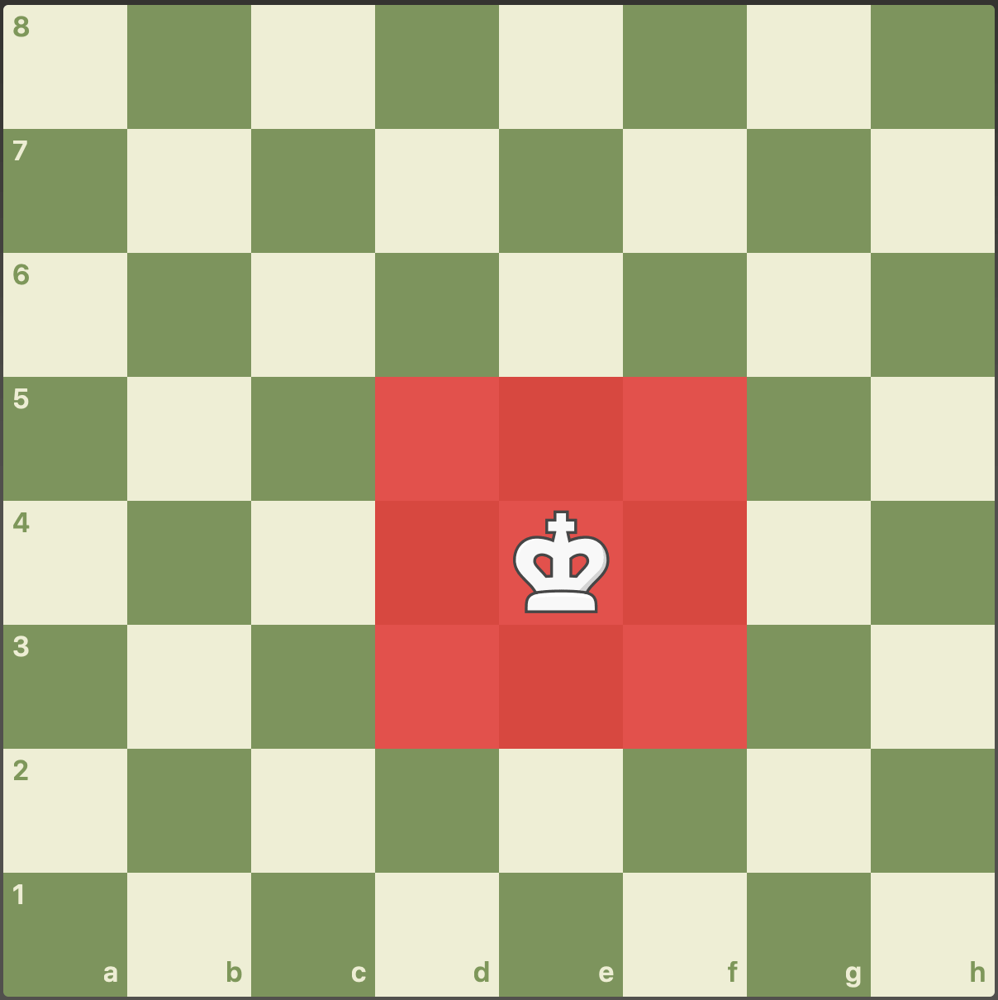

| Pièce |
Image |
Rôle |
| Cavalier |
 |
Le cavalier est la seule pièce « sauteuse » du jeu. Il se déplace
d'une case dans une direction horizontale ou verticale. Une autre
visualisation possible pour décrire son déplacement est de dire
qu'il se déplace de deux cases devant lui puis qu'il va sur une
case perpendiculaire. On dit alors qu'il se déplace en « L »
|
| Pion |
 |
Le pion se déplace droit devant lui, d'une seule case à chaque
coup et sans jamais pouvoir reculer. Lors de son premier
déplacement (alors qu'il est sur sa case initiale), un pion peut
avancer, au choix, d'une ou de deux cases en un seul coup. Il ne
peut capturer une pièce adverse que si elle se trouve à une case
en diagonale de lui dans son sens de déplacement
|
| Roi |
 |
Le roi se déplace d'une case dans n'importe quelle direction. Il
est interdit à un joueur de mettre son propre roi en échec
|
| Fou |
 |
Le fou se déplace en suivant les diagonales, on remarque qu'il se
déplace toujours sur les cases d'une même couleur
|
| Tour |
 |
La tour se déplace en suivant les colonnes ou les rangées |
| Reine |
 |
La reine cumule les déplacements de la tour et du fou, cela en
fait la pièce la plus puissante du jeu
|